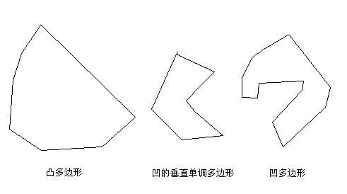

基于 Linux 和 MiniGUI 的嵌入式系统软件开发指南（七）
MiniGUI 1.1.0 引入的新 GDI 功能和函数之二
魏永明 (ymwei@minigui.org)
自由撰稿人
2001 年 11 月
我们在“MiniGUI 1.1.0 版本引入的新 GDI 功能和函数”一文中描述了在 1.1.0Pre4 版本中添加的新 GDI 相关函数的功能及其使用。目前，MiniGUI 1.1.0Pre7 版本已经发布，该版本较 1.1.0Pre4 版本新增了若干 GDI 函数，新 GDI 接口也相对成熟。本文将描述新增的 GDI 接口及其使用。
1 引言
我们在本系列主题五中曾经详细描述了在 MiniGUI 1.1.0 版本开发过程中添加的新 GDI 功能和函数。这些接口首次出现在版本 1.1.0Pre4 当中。目前 MiniGUI 1.1.0Pre7 版本已经发布，该版本中的新 GDI 接口趋于稳定，相对 1.1.0Pre4 版本而言，又新增了若干高级图形接口。这些接口涉及到直线和曲线生成器、复杂曲线的绘制、封闭曲线填充、复杂区域的创建、直接的显示缓冲区访问、YUV 覆盖和 Gamma 校正等等。本文将就这些主题详细描述各个接口的用法。
2 曲线和填充生成器
在一般的图形系统中，通常给用户提供若干用于进行直线或者复杂曲线，比如圆弧、椭圆和样条曲线的绘图函数。用户可以通过这些函数进行绘图，但不能利用这些系统中已有的曲线生成算法完成其他的工作。在 MiniGUI 新的 GDI 接口设计当中，我们采用了一种特殊的设计方法来实现曲线和封闭曲线的填充，这种方法非常灵活，而且给用户提供了直接使用系统内部算法的机会：
1）系统中定义了若干用来生成直线和曲线的函数，我们称之为"曲线生成器"；
2）用户在调用生成器之前，需要定义一个回调函数，并将函数地址传递给曲线生成器，曲线生成器在生成了一个曲线上的点或者封闭曲线中的一条水平填充线时，将调用这个回调函数。
3）用户可以在回调函数当中完成针对新的点或者新的水平填充线的操作。对 MiniGUI 绘图函数来说，就是完成绘图工作。
4）因为回调函数在生成器的运行过程中不断调用，为了保持一致的上下文环境，系统允许用户在调用曲线生成器时传递一个表示上下文的指针，生成器将把该指针传递给回调函数。
下面将分小节讲述目前的 MiniGUI 版本所提供的曲线和填充生成器。
2.1 直线剪切器和直线生成器
直线剪切器和生成器的原型如下：
/* Line clipper */
BOOL GUIAPI LineClipper (const RECT* cliprc, int *_x0, int *_y0, int *_x1, int *_y1);
/* Line generators */
typedef void (* CB_LINE) (void* context, int stepx, int stepy);
void GUIAPI LineGenerator (void* context, int x1, int y1, int x2, int y2, CB_LINE cb);
|
直线剪切器并不是生成器，它用于对给定的直线进行剪切操作。cliprc 是给定的直线，而 _x0、_y0、_x1 和 _y1 传递要剪切的直线起始端点，并通过这些指针返回剪切之后的直线起始端点。MiniGUI 内部使用了 Cohen-Sutherland 算法。
LineGenerator 是采用 Breshenham 算法的生成器。该生成器从给定直线的起始端点开始，每生成一个点调用一次 cb 回调函数，并传递上下文 context、以及新的点相对于上一个点的步进值或者差量。比如，传递 stepx =1，stepy = 0 表示新的点比上一个点在 X 轴上前进一步，而在 Y 轴上保持不变。回调函数可以在步进值基础上实现某种程度上的优化。
2.2 圆生成器
MiniGUI 定义的圆生成器原型如下：
/* Circle generator */
typedef void (* CB_CIRCLE) (void* context, int x1, int x2, int y);
void GUIAPI CircleGenerator (void* context, int sx, int sy, int r, CB_CIRCLE cb);
|
首先要指定圆心坐标以及半径，并传递上下文信息以及回调函数，每生成一个点，生成器将调用一次 cb 回调函数，并传递三个值：x1、x2 和 y。这三个值实际表示了圆上的两个点：(x1, y) 和 (x2, y)。因为圆的对称性，生成器只要计算圆上的四分之一圆弧点即可得出圆上所有的点。
2.3 椭圆生成器
椭圆生成器和圆生成器类似，原型如下：
/* Ellipse generator */
typedef void (* CB_ELLIPSE) (void* context, int x1, int x2, int y);
void GUIAPI EllipseGenerator (void* context, int sx, int sy, int rx, int ry, CB_ELLIPSE cb);
|
首先要指定椭圆心坐标以及 X 轴和 Y 轴半径，并传递上下文信息以及回调函数，每生成一个点，生成器将调用一次 cb 回调函数，并传递三个值：x1、x2 和 y。这三个值实际表示了椭圆上的两个点：(x1, y) 和 (x2, y)。因为椭圆的对称性，生成器只要计算椭圆上的二分之一圆弧点即可得出椭圆上所有的点。
2.4 圆弧生成器
MiniGUI 定义的圆弧生成器如下所示：
/* Arc generator */
typedef void (* CB_ARC) (void* context, int x, int y);
void GUIAPI ArcGenerator (void* context, int sx, int sy, int r, fixed ang1, fixed ang2, CB_ARC cb);
|
首先要指定圆弧的圆心、半径、起始弧度和终止弧度。需要注意的是，起始弧度和终止弧度是采用定点数表示的，而不是浮点数，并且是弧度而不是角度。然后传递 cb 回调函数。每生成一个圆弧上的点，该函数将调用回调函数，并传递新点的坐标值 (x, y)。
有关定点数的信息，请参阅本系列"主题六：MiniGUI 提供的非 GUI/GDI 接口"一文。
2.5 垂直单调多边形生成器
通常而言，多边形有凸多边形和凹多边形之分。这里的垂直单调多边形，是为了优化多边形填充算法而针对计算机图形特点而提出的一种特殊多边形，这种多边形的定义如下：
垂直单调多边形是指，多边形的边和计算机屏幕上的所有水平扫描线，只能有一个或者两个交点，不会有更多交点。
图 1 给出了凸多边形、凹多边形和垂直单调多边形的几个示例。

需要注意的是，凸多边形一定是垂直单调多边形，但垂直单调多边形可以是凹多边形。显然，普通的多边形填充算法需要判断多边形边和每条屏幕扫描线之间的交点个数，而垂直单调多边形则可以免去这一判断，所以可以大大提高多边形填充的速度。
MiniGUI 所定义的垂直单调多边形相关函数原型如下：
/* To determine whether the specified Polygon is Monotone Vertical Polygon */
BOOL GUIAPI PolygonIsMonotoneVertical (const POINT* pts, int vertices);
/* Monotone vertical polygon generator */
typedef void (* CB_POLYGON) (void* context, int x1, int x2, int y);
BOOL GUIAPI MonotoneVerticalPolygonGenerator (void* context, const POINT* pts, int vertices, CB_POLYGON cb);
|
PolygonIsMonotoneVertical 用来判断给定的多边形是否是垂直单调多边形，而 MonotoneVerticalPolygonGenerator 函数是垂直多边形生成器。在 MiniGUI 当中，多边形是由组成多边形的顶点来表示的。pts 表示顶点数组，而 vertices 表示顶点个数。生成器生成的实际是填充多边形的每一条水平线，端点为 (x1, y) 和 (x2, y)。
2.6 一般矩形生成器
MiniGUI 还提供了一般的矩形生成器，该生成器可以处理凸多边形，也可以处理凹多边形。原型如下：
/* General polygon generator */
typedef void (* CB_POLYGON) (void* context, int x1, int x2, int y);
BOOL GUIAPI PolygonGenerator (void* context, const POINT* pts, int vertices, CB_POLYGON cb);
|
和垂直单调多边形生成器一样，该函数生成的是填充多边形的每一条水平扫描线：x1 是水平线的起始X坐标；x2 是水平线的终止 X 坐标；y 是水平线的 Y 坐标值。
2.7 填注生成器
填注（flood filling）生成器比较复杂。这个函数在 MiniGUI 内部用于 FloodFill 函数。我们知道，FloodFill 函数从给定的起始位置开始，以给定的颜色向四面八方填充某个区域（像水一样蔓延，因此叫 Flood Filling），一直到遇到与给定起始位置的象素值不同的点为止。因此，在这一过程中，我们需要两个回调函数，一个回调函数用来判断蔓延过程中遇到的点的象素值是否和起始点相同，另外一个回调函数用来生成填充该区域的水平扫描线。在进行绘图时，该函数比较的是象素值，但实际上，该函数也可以比较任何其他值，从而完成特有的蔓延动作。这就是将填注生成器单独出来的初衷。MiniGUI 如下定义填注生成器：
/* General Flood Filling generator */
typedef BOOL (* CB_EQUAL_PIXEL) (void* context, int x, int y);
typedef void (* CB_FLOOD_FILL) (void* context, int x1, int x2, int y);
BOOL GUIAPI FloodFillGenerator (void* context, const RECT* src_rc, int x, int y,
CB_EQUAL_PIXEL cb_equal_pixel, CB_FLOOD_FILL cb_flood_fill);
|
cb_equal_pixel 被调用，以便判断目标点的象素值是否和起始点一样，起始点的象素值可以通过 context 来传递。cb_flood_fill 函数用来填充一条扫描线，传递的是水平扫描线的端点，即(x1, y) 和 (x2, y)。
2.8 曲线和填充生成器的用法
曲线和填充生成器的用法非常简单。为了对曲线和填充生成器有个更好的了解，我们首先看 MiniGUI 内部是如何使用曲线和填充生成器的。
下面的程序段来自 MiniGUI 的 FloodFill 函数（src/newgdi/flood.c）：
static void _flood_fill_draw_hline (void* context, int x1, int x2, int y)
{
PDC pdc = (PDC)context;
RECT rcOutput = {MIN (x1, x2), y, MAX (x1, x2) + 1, y + 1};
ENTER_DRAWING (pdc, rcOutput);
_dc_draw_hline_clip (context, x1, x2, y);
LEAVE_DRAWING (pdc, rcOutput);
}
static BOOL equal_pixel (void* context, int x, int y)
{
gal_pixel pixel = _dc_get_pixel_cursor ((PDC)context, x, y);
return ((PDC)context)->skip_pixel == pixel;
}
/* FloodFill
* Fills an enclosed area (starting at point x, y).
*/
BOOL GUIAPI FloodFill (HDC hdc, int x, int y)
{
PDC pdc;
BOOL ret = TRUE;
if (!(pdc = check_ecrgn (hdc)))
return TRUE;
/* hide cursor tempororily */
ShowCursor (FALSE);
coor_LP2SP (pdc, &x, &y);
pdc->cur_pixel = pdc->brushcolor;
pdc->cur_ban = NULL;
pdc->skip_pixel = _dc_get_pixel_cursor (pdc, x, y);
/* does the start point have a equal value? */
if (pdc->skip_pixel == pdc->brushcolor)
goto equal_pixel;
ret = FloodFillGenerator (pdc, &pdc->DevRC, x, y, equal_pixel, _flood_fill_draw_hline);
equal_pixel:
UNLOCK_GCRINFO (pdc);
/* Show cursor */
ShowCursor (TRUE);
return ret;
}
|
该函数在经过一些必要的初始化工作之后，调用 FloodFillGenerator 函数，并传递了上下文 pdc （pdc 是 MiniGUI 内部表示 DC 的数据结构）和两个回调函数地址：equal_pixel 和 _flood_fill_draw_hline 函数。在这之前，该函数获得了起始点的象素值，并保存在了pdc->skip_pixel 当中。equal_pixel 函数获得给定点的象素值，然后返回与 pdc->skip_pixel 相比较之后的值；_flood_fill_draw_hline 函数调用内部函数进行水平线的绘制。
读者可以看到，这种简单的生成器实现方式，能够大大降低代码复杂度，提高代码的重用能力。有兴趣的读者可以比较 MiniGUI 新老 GDI 接口的 LineTo 函数实现，相信能够得出一样的结论。
当然设计生成器的目的主要还是为方便用户使用。比如，你可以利用 MiniGUI 内部的曲线生成器完成自己的工作。下面的示例假定你使用圆生成器绘制一个线宽为 4 象素的圆：
static void draw_circle_pixel (void* context, int x1, int x2, int y)
{
HDC hdc = (HDC) context;
/* 以圆上的每个点为圆心，填充半径为 2 的圆。*/
FillCircle (hdc, x1, y, 2);
FillCircle (hdc, x2, y, 2);
}
void DrawMyCircle (HDC hdc, int x, int y, int r, gal_pixel pixel)
{
gal_pixel old_brush;
old_bursh = SetBrushColor (hdc, pixle);
/* 调用圆生成器 */
CircleGenerator ((void*)hdc, x, y, r, draw_circle_pixel);
/* 恢复旧的画刷颜色 */
SetBrushColor (hdc, old_brush);
}
|
从上面的例子可以看出，曲线和填充生成器的用法极其简单，而且结构清晰明了。读者在自己的开发过程中，也可以学习这种方法。
3 绘制复杂曲线
基于 2 中描述的曲线生成器，MiniGUI 提供了如下基本的曲线绘制函数：
void GUIAPI MoveTo (HDC hdc, int x, int y);
void GUIAPI LineTo (HDC hdc, int x, int y);
void GUIAPI Rectangle (HDC hdc, int x0, int y0, int x1, int y1);
void GUIAPI PollyLineTo (HDC hdc, const POINT* pts, int vertices);
void GUIAPI SplineTo (HDC hdc, const POINT* pts);
void GUIAPI Circle (HDC hdc, int sx, int sy, int r);
void GUIAPI Ellipse (HDC hdc, int sx, int sy, int rx, int ry);
void GUIAPI Arc (HDC hdc, int sx, int sy, int r, fixed ang1, fixed ang2);
|
MoveTo 将当前画笔的起始点移动到给定点（x, y），以逻辑坐标指定。
LineTo 从当前画笔点画直线到给定点（x, y），以逻辑坐标指定。
Rectangle 函数画顶点为（x0, y0）和（x1, y0）的矩形。
PollyLineTo 函数利用 LineTo 函数画折线。pts 指定了折线的各个端点，vertices 指定了折线端点个数。
SplineTo 函数利用 LineTo 函数画三次样条曲线。需要注意的是，必须传递四个点才能惟一确定一条样条曲线，也就是说，pts 是一个指向包含 4 个 POINT 结构数组的指针。
Circle 函数绘制圆，圆心为 (sx, sy)，半径为 r，以逻辑坐标指定。
Ellipse 函数绘制椭圆，椭圆心为（sx, sy），X 轴半径为 rx，Y 轴半径为 ry。
Arc 函数绘制圆弧，（sx, sy） 指定了圆心，r 指定半径，ang1 和 ang2 指定圆弧的起始弧度和终止弧度。需要注意的是，ang1 和 ang2 是以定点数形式指定的。
作为示例，我们看 Circle 和 Ellipse 函数的用法。假定给定了两个点，pts[0] 和 pts[1]，其中 pts[0] 是圆心或者椭圆心，而 pts[1] 是圆或者椭圆外切矩形的一个顶点。下面的程序段绘制由这两个点给定的圆或者椭圆：
int rx = ABS (pts[1].x - pts[0].x);
int ry = ABS (pts[1].y - pts[0].y);
if (rx == ry)
Circle (hdc, pts[0].x, pts[0].y, rx);
else
Ellipse (hdc, pts[0].x, pts[0].y, rx, ry);
|
4 封闭曲线填充
MiniGUI 目前提供了如下的封闭曲线填充函数：
void GUIAPI FillBox (HDC hdc, int x, int y, int w, int h);
void GUIAPI FillCircle (HDC hdc, int sx, int sy, int r);
void GUIAPI FillEllipse (HDC hdc, int sx, int sy, int rx, int ry);
void GUIAPI FillSector (HDC hdc, int sx, int sy, int r, int ang1, int ang2);
BOOL GUIAPI FillPolygon (HDC hdc, const POINT* pts, int vertices);
BOOL GUIAPI FloodFill (HDC hdc, int x, int y);
|
FillBox 函数填充指定的矩形。该矩形左上角顶点为（x, y），宽度为 w，高度为 h，以逻辑坐标指定。
FillCircle 函数填充指定的圆。圆心为（sx, xy），半径为 r，以逻辑坐标指定。
FillEllips 函数填充指定的椭圆。椭圆心为（sx, sy），X 轴半径为 rx，Y 轴半径为 ry。
FillSector 函数填充由圆弧和两条半径形成的扇形。圆心为（x, y），半径为 r，起始弧度为 ang1，终止弧度为 ang2。
FillPolygon 函数填充多边形。pts 表示多边形各个顶点，vertices 表示多边形顶点个数。
FloodFill 从指定点（x, y）开始填注。
需要注意的是，所有填充函数使用当前画刷属性（颜色），并且受当前光栅操作的影响。
下面的例子说明了如何使用 FillCircle 和 FillEllipse 函数填充圆或者椭圆。假定给定了两个点，pts[0] 和 pts[1]，其中 pts[0] 是圆心或者椭圆心，而 pts[1] 是圆或者椭圆外切矩形的一个顶点。
int rx = ABS (pts[1].x - pts[0].x);
int ry = ABS (pts[1].y - pts[0].y);
if (rx == ry)
FillCircle (hdc, pts[0].x, pts[0].y, rx);
else
FillEllipse (hdc, pts[0].x, pts[0].y, rx, ry);
|
5 建立复杂区域
除了利用填充生成器进行填充绘制以外，我们还可以使用填充生成器建立由封闭曲线包围的复杂区域。我们知道，MiniGUI 当中的区域是由互不相交的矩形组成的，并且满足 x-y-banned 的分布规则。利用上述的多边形或者封闭曲线生成器，可以将每条扫描线看成是组成区域的高度为 1 的一个矩形，这样，我们可以利用这些生成器建立复杂区域。MiniGUI 利用现有的封闭曲线生成器，实现了如下的复杂区域生成函数：
BOOL GUIAPI InitCircleRegion (PCLIPRGN dst, int x, int y, int r);
BOOL GUIAPI InitEllipseRegion (PCLIPRGN dst, int x, int y, int rx, int ry);
BOOL GUIAPI InitPolygonRegion (PCLIPRGN dst, const POINT* pts, int vertices);
BOOL GUIAPI InitSectorRegion (PCLIPRGN dst, const POINT* pts, int vertices);
|
利用这些函数，我们可以将某个区域分别初始化为圆、椭圆、多边形和扇形区域。然后，可以利用这些区域进行点击测试（PtInRegion 和 RectInRegion），或者选择到 DC 当中作为剪切域，从而获得特殊显示效果。
6 直接访问显示缓冲区
在新的 GDI 接口中，我们添加了用来直接访问显示缓冲区的函数，原型如下：
Uint8* GUIAPI LockDC (HDC hdc, const RECT* rw_rc, int* width, int* height, int* pitch);
void GUIAPI UnlockDC (HDC hdc);
|
LockDC 函数锁定给定 HDC 的指定矩形区域（由矩形 rw_rc指定，设备坐标），然后返回缓冲区头指针。当 width、height、pitch 三个指针不为空时，该函数将返回锁定之后的矩形有效宽度、有效高度和每扫描线所占的字节数。
UnlockDC 函数解开已锁定的 HDC。
锁定一个 HDC 意味着 MiniGUI 进入以互斥方式访问显示缓冲区的状态。如果被锁定的 HDC 是一个屏幕 DC（即非内存 DC），则该函数将在必要时隐藏鼠标光标，并锁定 HDC 对应的全局剪切域。在锁定一个 HDC 之后，程序可通过该函数返回的指针对锁定区域进行访问。需要注意的是，不能长时间锁定一个 HDC，也不应该在锁定一个 HDC 时进行其他额外的系统调用。
假定以锁定矩形左上角为原点建立坐标系，X 轴水平向右，Y 轴垂直向下，则可以通过如下的公式计算该坐标系中（x, y）点对应的缓冲区地址（假定该函数返回的指针值为 frame_buffer）：
Uint8* pixel_add = frame_buffer + y * (*pitch) + x * GetGDCapability (hdc, GDCAP_BPP);
|
根据该 HDC 的颜色深度，就可以对该象素进行读写操作。作为示例，下面的程序段随机填充锁定区域：
int i, width, height, pitch;
RECT rc = {0, 0, 200, 200};
int bpp = GetGDCapability (hdc, GDCAP_BPP);
Uint8* frame_buffer = LockDC (hdc, &rc, &width, &height, &pitch);
Uint8* row = frame_buffer;
for (i = 0; i < *height; i++) {
memset (row, rand ()%0x100, *width * bpp);
row += *pitch;
}
UnlockDC (hdc);
|
7 YUV 覆盖和 Gamma 校正
为了增强 MiniGUI 对多媒体的支持，我们增加了对 YUV 覆盖（Overlay）和 Gamma 校正的支持。
7.1 YUV 覆盖（Overlay）
多媒体领域中，尤其在涉及到 MPEG 播放时，通常使用 YUV 颜色空间来表示颜色，如果要在屏幕上显示一副 MPEG 解压之后的图片，则需要进行 YUV 颜色空间到 RGB 颜色空间的转换。YUV 覆盖最初来自一些显示芯片的加速功能。这种显示芯片能够在硬件基础上完成 YUV 到 RGB 的转换，免去软件转换带来的性能损失。在这种显示芯片上建立了 YUV 覆盖之后，可以直接将 YUV 信息写入缓冲区，硬件能够自动完成 YUV 到 RGB 的转换，从而在 RGB 显示器上显示出来。在不支持 YUV 覆盖的显示芯片上，MiniGUI 也能够通过软件实现 YUV 覆盖，这时，需要调用 DisplayYUVOverlay 函数将 YUV 信息转换并缩放显示在建立 YUV 覆盖的 DC 设备上。
MiniGUI 提供的 YUV 覆盖操作函数原型如下：
/***************************** YUV overlay support ***************************/
/* 最常见的视频覆盖格式.
*/
#define GAL_YV12_OVERLAY 0x32315659 /* Planar mode: Y + V + U (3 planes) */
#define GAL_IYUV_OVERLAY 0x56555949 /* Planar mode: Y + U + V (3 planes) */
#define GAL_YUY2_OVERLAY 0x32595559 /* Packed mode: Y0+U0+Y1+V0 (1 plane) */
#define GAL_UYVY_OVERLAY 0x59565955 /* Packed mode: U0+Y0+V0+Y1 (1 plane) */
#define GAL_YVYU_OVERLAY 0x55595659 /* Packed mode: Y0+V0+Y1+U0 (1 plane) */
/* 该函数创建一个视频输出覆盖
*/
GAL_Overlay* GUIAPI CreateYUVOverlay (int width, int height,
Uint32 format, HDC hdc);
/* 锁定覆盖进行直接的缓冲区读写，结束后解锁 */
int GAL_LockYUVOverlay (GAL_Overlay *overlay);
void GAL_UnlockYUVOverlay (GAL_Overlay *overlay);
#define LockYUVOverlay GAL_LockYUVOverlay
#define UnlockYUVOverlay GAL_UnlockYUVOverlay
/* 释放视频覆盖 */
void GAL_FreeYUVOverlay (GAL_Overlay *overlay);
#define FreeYUVOverlay GAL_FreeYUVOverlay
/* 将视频覆盖传送到指定 DC 设备上。该函数能够进行 2 维缩放
*/
void GUIAPI DisplayYUVOverlay (GAL_Overlay* overlay, const RECT* dstrect);
|
有关视频格式的信息，可参见：
http://www.webartz.com/fourcc/indexyuv.htm
|
有关颜色空间的相互关系的息，可参见：
http://www.neuro.sfc.keio.ac.jp/~aly/polygon/info/color-space-faq.html
|
7.2 Gamma 校正
Gamma 校正通过为 RGB 颜色空间的每个颜色通道设置 Gamma 因子，来动态调整 RGB 显示器上的实际 RGB 效果。需要注意的是，Gamma 校正需要显示芯片的硬件支持。
应用程序可以通过 SetGamma 函数设置 RGB 三个颜色通道的 Gamma 校正值。该函数原型如下：
int GAL_SetGamma (float red, float green, float blue);
#define SetGamma GAL_SetGamma
|
线性 Gamma 校正值的范围在 0.1 到 10.0 之间。如果硬件不支持 Gamma 校正，该函数将返回 -1。
应用程序也可以通过 SetGammaRamp 函数设置 RGB 三个颜色通道的非线性 Gamma 校正值。该函数原型如下：
int GAL_SetGammaRamp (Uint16 *red, Uint16 *green, Uint16 *blue);
#define SetGammaRamp GAL_SetGammaRamp
int GAL_GetGammaRamp (Uint16 *red, Uint16 *green, Uint16 *blue);
#define GetGammaRamp GAL_GetGammaRamp
|
函数 SetGammaRamp 实际设置的是每个颜色通道的 Gamma 转换表，每个表由 256 个值组成，表示设置值和实际值之间的对应关系。当设置屏幕上某个象素的 RGB 分别为 R、G、B 时，实际在显示器上获得的象素 RGB 值分别为：red[R]、green[G]、blue[B]。如果硬件不支持 Gamma 校正，该函数将返回 -1。
函数 GetGammaRamp 获得当前的 Gamma 转换表。
Gamma 校正的最初目的，是为了能够在显示器上精确还原一副图片。Gamma 值在某种程度上表示的是某个颜色通道的对比度变化。但 Gamma 在多媒体和游戏程序中有一些特殊用途�D�D通过 Gamma 校正，可以方便地获得对比度渐进效果。
8 小结
本文描述了自 MiniGUI 1.1.0Pre4 版本发布以来新增的 GDI 接口。这些接口涉及到曲线和填充生成器、复杂曲线的绘制、封闭曲线填充、复杂区域的创建、直接访问 FrameBuffer、YUV 覆盖和 Gamma 校正等等。通过本文的介绍，相信读者能够对 MiniGUI 的新 GDI 接口有一个更加全面的认识。
作者
魏永明（ymwei@minigui.org），男，28 岁。1998 年毕业于清华大学精密仪器系，获工学硕士学位。国内最有影响的自由软件项目之一－－MiniGUI 的创始人及主要开发人员。著有《Linux 实用教程》与《学用 Linux 与 Windows NT》，并主持翻译了《Red Hat Linux 奥秘》、《Linux 编程宝典》 等大量优秀的 Linux 技术著作。是清华大学 AKA 信息技术协会 Linux 编程技术系列讲座的主讲人。